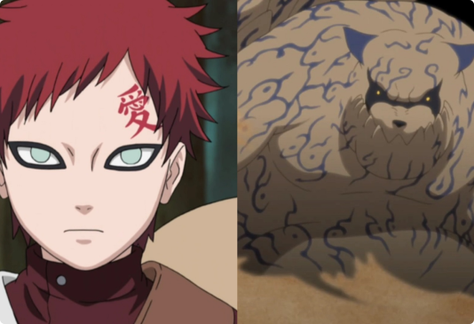

Shukako
Jinchūriki: GaaraShukaku (守鶴, Shukaku), mais conhecido como Uma-Cauda (一尾, Ichibi), é uma das nove Bestas com Cauda. No passado, ele foi selado dentro de Gaara de Sunagakure, depois de ter sido selado em dois outros jinchūriki antes dele.
O Shukaku surgiu ao ser criado por Hagoromo Ōtsutsuki, que usando sua Técnica da Criação de Todas as Coisas logo após sua vitória sobre o Dez Caudas, separou o chakra do ser e o dividiu em nove entidades separadas que viriam a serem conhecidas como Bestas com Cauda, de modo que assim garantir que ele nunca iria ressurgir depois de sua morte. Logo após criá-las, Hagoromo as armazenou dentro de si, a fim de não só cuidar delas, mas também ensiná-las a confiar e ajudar os seres humanos.
Durante a era de formação das vilas ocultas e dos Cinco Grandes Países Shinobi, Shukaku fora a primeira das Bestas com Cauda a ser capturada, sendo em seu caso pego por discípulos de seu próprio templo e mantido confinado na recém formada Sunagakure, com o qual o Primeiro Kazekage, que foi convidado, juntamente com os outros primeiros Kage por Hashirama Senju para a primeira Reunião dos Cinco Kage, tentou usar sua posse do tanuki como uma alavanca para ganhar riquezas para sua nação, ao invés de querer ganhar outra Besta com Cauda./p>
"Para fugir de um destino de solidão, eu não tenho outra escolha, a não ser construir meu próprio destino." - Gaara
- Afiliação:Vila oculta da areia
- Caudas: Uma Cauda
- Classificação: Besta com Cauda
- Família: Hagoromo Ōtsutsuki
- Jinchūriki: Gaara
- Kekkei Genkai